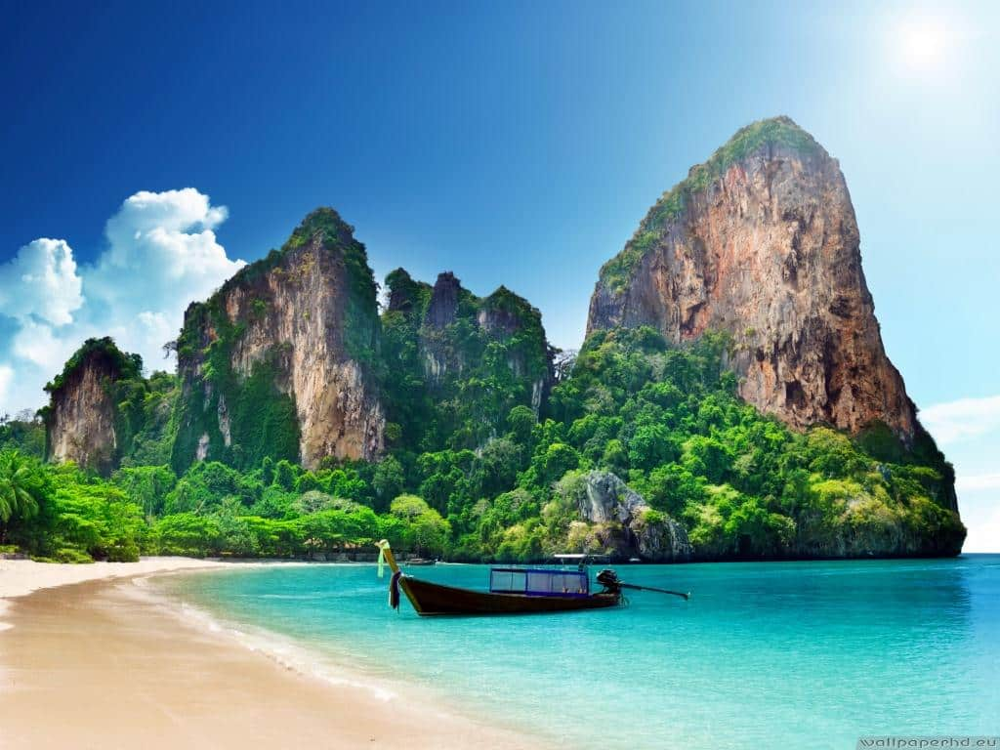

 Beautiful sceneary, cool crystal blue water and away from all the hustle and bustle of the fast paced city life. Krabi is a place I would really like to experience. Whereas most places around Thailand offer great thrills for both night and day, Krabi has a more relaxed experience for visitors to just unwind.
I’ve been interested in learning Thai for quite some time because it would make traveling around Thailand much easier if I could be able to communicate with the locals.
| * In Thai, men end their sentences off with “Krahp” and females end their sentences off with “Kha” as a sign of respect. | ||
|---|---|---|
| *English Phrase* | *Thai Translation* | |
| Male/Female | Male | Female |
| “Hello” | “Sawa-dii-krahp” | “Sawa-dii-kha” |
| “How are you?” | “Sabai-dii-mai?” | “Sabai-dii-mai?” |
| “What is your name?” | “Kun-chu-arai?” | “Kun-chu-arai?” |
Built somewhere between 1666 and 1679 by the Dutch East India Company, The Castle of Good Hope is the oldest existing colonial building in South Africa. Originally the castle was constructed from clay and timber and named “Fort de Goed Hoop” by Jan van Riebeck when he first settled in Cape Town. It was mostly used as a refreshment stand for passing ships. It wasnt until after tensions began to rise between the Dutch and the English did Jan van Riebeck’s successor, Commander Zacharias Wagenaer, receive orders to build a pentagonal fortress out of stone which today is known as the Castle of Good Hope. Personally I argue that this so called “Castle” is actually a fort but that is just my opinion.
The Iziko Museum was originally a slave lodge built by the Dutch East India company in 1679 and estimated to have housed up to 9000 slaves, convicts and mentally ill between 1679 and 1811. In 1810 the building was modified to house various governmental offices. In 1960 the building was restored and in 1966 the building opened its doors as the SA cultural museum up until 1998 where it was renamed the slave lodge. However, in 2000, the museum and all its other associated sites combined together with its parent body to form the Iziko museum. It’s a great site to visit to learn about the history of South Africa but I’m more likely to be wandering around the marine exhibit pretending to be a fish.
In 1900, the Mayor of Cape Town, Thomas Ball, laid the cornerstone of City Hall but it was only in 1905 that City Hall was opened. Designed in an italian Renaissance style by architects Reid and Green, City Hall was one of the final victorian buildings to be erected in Cape Town. City Hall overlooks the Grande Parade and has held many political gatherings. It was also here that Nelson Mandela gave his first public speech hours after his release from prison on the 11 th of February 1990. I can only wish to have been able to experience such an amazing event but unfortunatly I wasn’t born for another 7 years after the event.